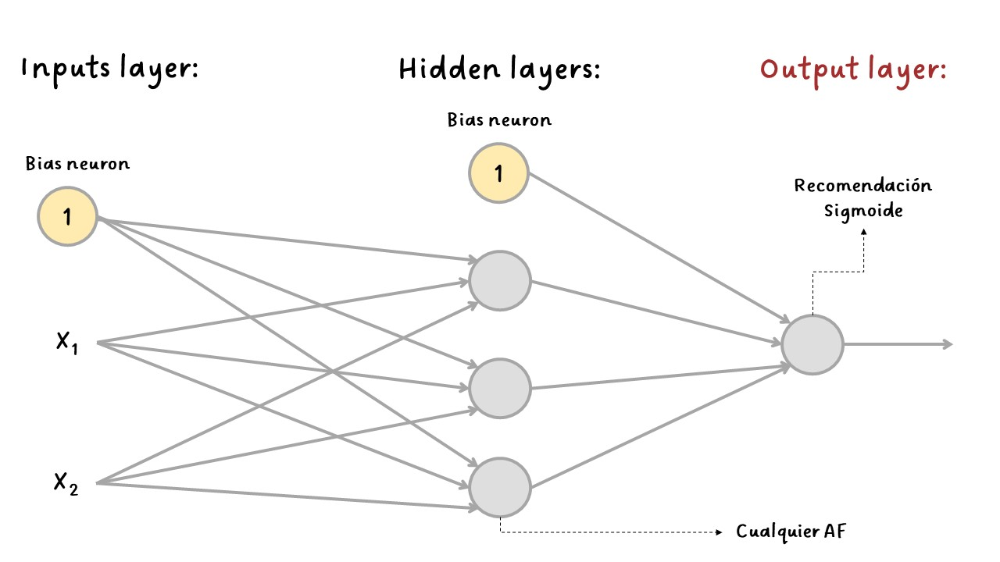
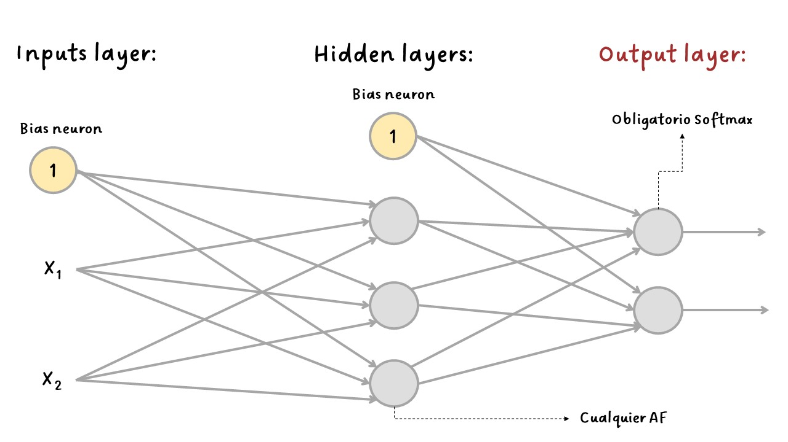

RNA para clasificación y regresión¶
RNA para clasificación¶
La arquitectura MLP también se pueden utilizar para tareas de clasificación.
Para problemas de clasificación binaria, solo se necesita una sola neurona de salida usando la función de activación sigmoide. La salida será un número entre \(0\) y \(1\), que podría interpretarse como la probabilidad estimada de la clase positiva. La probabilidad de la clase negativa es igual a uno menos este número.
Para problemas de clasificación binaria multietiqueta, se utiliza una neurona de salida para cada clase positiva. En este caso las probabilidades de salida no necesariamente suman \(1\). Esto genera que el modelo genere cualquier combinación de etiquetas.
Si cada observación solo puede pertenecer a una sola clase, por ejemplo, clases del \(0\) al \(9\) para clasificación de imágenes con dígitos, entonces se necesita una neurona de salida por cada clase y se debe usar la función de activación sotfmax para toda la capa de salida. Esta función garantiza que todas las probabilidades estimadas estén entre \(0\) y \(1\) y que sumen \(1\), lo cual es obligatorio si las clases son excluyentes. Esto se llama clasificación multiclase.
Con softmax se genera una distribución de probabilidad sobre las N clases de salida.
Tipos de problemas de clasificación:¶
Clasificación binaria: una tarea de clasificación en la que cada muestra de entrada debe clasificarse en dos categorías exclusivas.
Clases: un conjunto de etiquetas posibles para elegir en un problema de clasificación. Por ejemplo, al clasificar imágenes de gatos y perros, “perro” y “gato” son las dos clases.
Clasificación multiclase: una tarea de clasificación en la que cada muestra de entrada debe categorizarse en más de dos categorías: por ejemplo, clasificar dígitos escritos a mano.
Clasificación multietiqueta: una tarea de clasificación en la que a cada muestra de entrada se le pueden asignar varias etiquetas. Por ejemplo, una imagen determinada puede contener tanto un gato como un perro y debe anotarse tanto con la etiqueta “gato” como con la etiqueta “perro”. El número de etiquetas por imagen suele ser variable.
Clasificación binaria:

Binary¶
Clasificación multiclase:

Multiclass¶
La siguiente tabla resumen una arquitectura típica de un MLP para clasificación:
Hiperparámetro |
Clasificación binaria |
Clasificación multibinaria |
Clasificación multiclase |
|---|---|---|---|
# input neurons |
Una por cada variable |
Una por cada variable |
Una por cada variable |
# hidden layers |
Depende del problema, pero podría ser entre 1 y 5 |
Depende del problema, pero podría ser entre 1 y 5 |
Depende del problema, pero podría ser entre 1 y 5 |
# de output neurons |
1 |
1 por etiqueta |
1 por clase |
Output activation |
|
|
|
Loss funtion |
|
|
|
Metricas de error |
|
|
|
RNA para Regresión:¶
Consiste en predecir un valor continuo en lugar de una etiqueta discreta.
Si se desea predecir un solo valor, solo se necestia una única neurona de salida, su salida será el valor predicho.
En la regresión multivarada, donde se predicen varios valores a la vez, se necesita una neurona de salida por cada dimensión de salida, por ejemplo, se necesitan dos salidas si la predicción es el ancho y el largo al mismo tiempo.
En general, al construir un MLP para regresión, no se desea utilizar ninguna función de activación para las neuronas de salida, por lo que son libres de generar cualquier rango de valores.
Si se desea garantizar que la salida sea siempre positiva, se puede usar la función de activación ReLU en la capa de salida. También se podría usar la función de activación softplus.
Si se desea garantizar que las predicciones se encuentran dentro de un rago de valores dado, se puede usar la función sigmoide o la tangente hiperbólica y luego escalar las variables al rando apropiado: de \(0\) a \(1\) para la función sigmoide y de \(-1\) a \(1\) para la tangente hiperbólica.
La función de pérdida (loss function) que se usa durante el entrenamiento suele ser el error cuadrático medio (Mean Squared Error-MSE), pero si hay presencia de valores atípicos en el conjunto de entrenamiento, es posible preferir una el error absoluto medio (Mean Absolute Error - MAE).
Una buena práctica generalizada es realizar una normalización a las variables de entrada.
La siguiente tabla resumen una arquitectura típica de un MLP para regresión:
Hiperparámetro |
Valor típico |
|---|---|
# input neurons |
Una por cada variable |
# hidden layers |
Depende del problema, pero podría ser entre 1 y 5 |
# neurons por hidden layer |
Depende del problema, pero podía ser entre 10 y 100 |
# de output neurons |
Una por cada dimensión de predicción |
Hidden activation |
Comunmente |
Output activation |
|
Loss funtion |
|